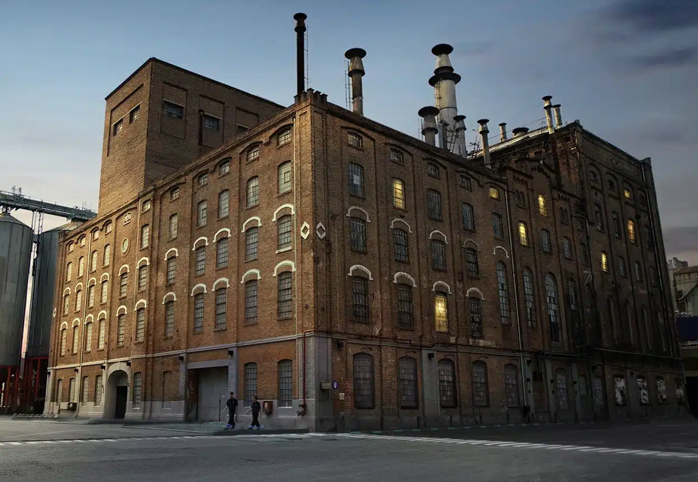
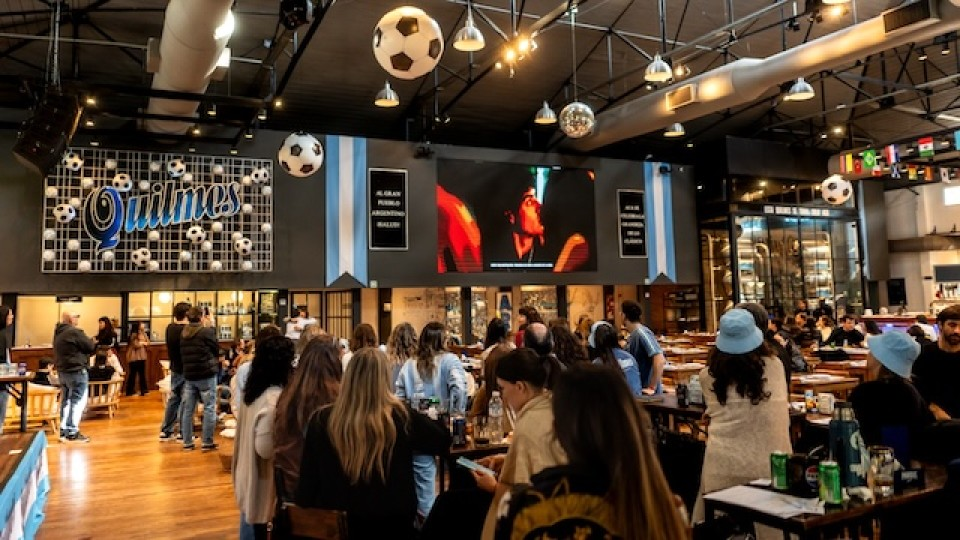

Patrimonio & Cultura
Descubrí la historia y tradición de Quilmes



Cervecería y Maltería Quilmes
Av. 12 de Octubre 100, B1878 Quilmes
Fundada el 31 de octubre de 1890 por Otto Bemberg, la Cervecería Quilmes es un verdadero monumento a la industria argentina. Con más de 130 años de historia, fue considerada "la primera y más importante de América del Sur". Hoy podés visitar La Casa de Quilmes, donde se ofrecen tours guiados por la histórica sala de cocimiento original de 1890, con sus auténticas ollas de cobre y vitrales restaurados.
- Tours guiados con degustación
- Museo con merchandising exclusivo
- Restaurante con menú de autor


Museo Histórico del Transporte Carlos Hillner y Decoud
Laprida N°2200, B1879 Quilmes Oeste
Inaugurado en 1963, este museo único alberga la colección de carruajes y arneses donada por Don Carlos Hillner, junto con un predio arbolado de 4 hectáreas. Es un espacio donde la historia del transporte se entrelaza con la identidad quilmeña, ofreciendo una experiencia lúdica para descubrir nuestro territorio y nuestros modos de andar a través de los siglos.
- Carruajes históricos originales
- Entrada gratuita
- Visitas guiadas para escuelas
- Actividades al aire libre en el parque
Martes a domingos de 14 a 18 hs | Parque: todos los días de 8 a 19 hs


Parroquia Nuestra Señora de la Guardia
Uno de los templos más emblemáticos de la ciudad, la Parroquia Nuestra Señora de la Guardia es referente de la fe y la tradición quilmeña. Su arquitectura destaca en el paisaje urbano y es punto de encuentro para la comunidad en celebraciones religiosas y eventos culturales. Representa la profunda raíz católica de la ciudad y su evolución a lo largo de más de un siglo de historia.
- Arquitectura histórica
- Celebraciones tradicionales
- Punto de encuentro comunitario


Biblioteca Pública de Quilmes
La Biblioteca Pública es un pilar fundamental de la cultura quilmeña, ofreciendo acceso gratuito a conocimiento, literatura y recursos educativos para toda la comunidad. Es un espacio de encuentro intelectual donde vecinos de todas las edades pueden sumergirse en la lectura, participar de talleres y disfrutar de una extensa colección de libros que abarca desde clásicos de la literatura argentina hasta novedades contemporáneas.
- Acceso gratuito
- Talleres culturales
- Sala de lectura
- Sala de Teatro